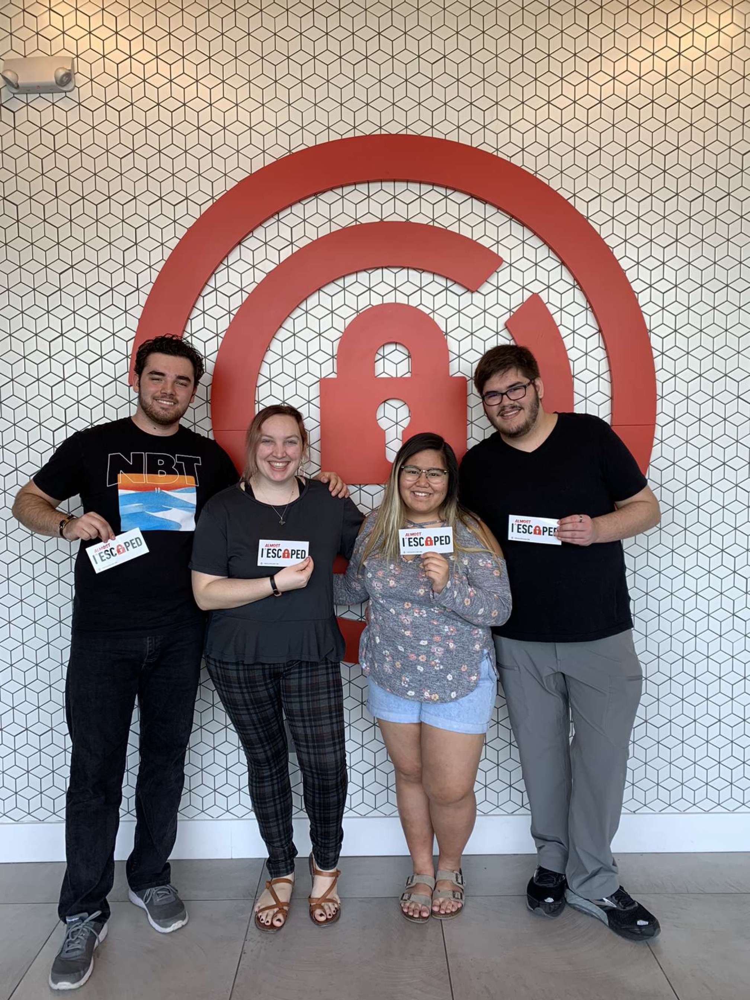

Kymberlee Sables
About Me
Hello, my name is Kymberlee (or Kym) and I am 20 years old, turning 21 on September 1 (woohoo!). I am currently majoring
in Computer Science with a minor in Math.
I was born in the Philippines and attended school there until 1st grade. At 7 years old, my family moved to the United
States for my father's job. During the 3rd grade I started piano, and I've learned music extensively for 9 years after
since then. It's funny how I ended up majoring in tech, especially with a musical background.
Some other facts about me is that I'm a workaholic (I need to have all my school work done before relaxing), I'm an
adrenaline junkie (love roller coasters!), and I'm a short person, only 5 ft tall.
Learn more about
Philippines, my home country.
Hobbies & Interests
When I'm not busy, I usually play a ton of video games with friends, especially with today's circumstances. It truly helps
me relax and time really flies by while playing some games. Below is a picture of my gaming pc along with my 27 inch
monitor, clacky keyboard, and mouse.

Learn more about
Steam,
the platform I use to get my video games.
If I'm not playing video games, I love hanging out with my friends. Our recent favorite activities is going through escape
rooms. Our plan is to do every escape room here in Jacksonville!

Education
I was raised in an environment and culture where education is valuable and work ethic is important, and I couldn't agree
more. I graduated high school from Paxon SAS and I am currently enrolled in University of North Florida pursuing my
Computer Science degree with a minor in Math, and I am projected to graduate in either Fall 2021 or Spring 2022.
Additionally, I have done 3 internships with Citi, and I'm planning to intern with them a 4th time next Summer. For my
early career, I am planning to land a Software Development role with them in the near future. I am very excited for my
future plans and goals!
What I have earned/currently pursuing:
- Bachelor's degree - Computer Science, Math (currently pursuing)
- High School Diploma (earned)
- IB Diploma (earned)
The IB Program is a rigorous 2 year academic curriculum offered in certain high schools.
Learn more about
Paxon
and what they offer.
Navigate to other pages here: